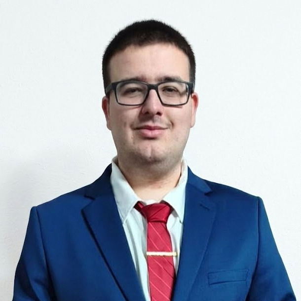

Curso de Especialización en Inteligencia Artificial y Big Data
2025 - 2026
CIFP Carlos III, Cartagena
Finalizado · Nota media: 9,20
Técnico Superior en DAM · Especialista en Big Data e Inteligencia Artificial

Desarrollador junior con formación finalizada en Desarrollo de Aplicaciones Multiplataforma y especialización en Big Data e Inteligencia Artificial. Tengo experiencia práctica en desarrollo de software de escritorio con Python/Qt, desarrollo móvil, automatización, tratamiento de datos, integración de IA local y construcción de aplicaciones con enfoque técnico y funcional.
Me motiva resolver problemas complejos mediante lógica, código claro y aprendizaje continuo. Busco aportar valor en equipos donde pueda seguir creciendo en desarrollo, IA aplicada y datos.
Lenguajes: Python, C#, Java, Kotlin, C++, JavaScript, HTML, CSS, SQL.
IA, datos y automatización: RAG, LangChain, LangGraph, ChromaDB, OpenAI, Azure Vision, AnythingLLM, LM Studio, Pandas, NumPy, Polars, PyCaret, TensorFlow, Keras, PyTorch, Jupyter.
Big Data y BI: Airflow, Spark, Hadoop, Parquet, MinIO, Superset, arquitectura Medallón, pipelines Bronze/Silver/Gold.
Backend y bases de datos: FastAPI, Spring Boot, Hibernate, Node.js, MySQL, PostgreSQL, MongoDB, Firebase, RabbitMQ, MQTT.
Frontend, móvil y escritorio: .NET MAUI, Blazor, Android, Qt/PySide6, WPF, Bootstrap, React, TailwindCSS.
Herramientas: Git, GitHub, Docker, Android Studio, Visual Studio, VS Code, Eclipse, NetBeans, Odoo, Node-RED, Playwright, Selenium.
Español: nativo.
Inglés: nivel técnico para lectura de documentación, APIs y comunicación básica.